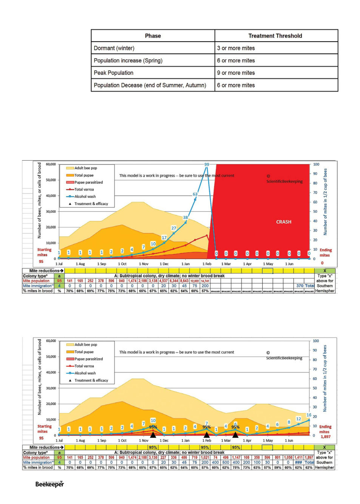

Varying Thresholds
Hopefully the general
idea of thresholds has
been well explained now,
and I’ll now make it a
little more complicated.
The number of mites per
bee is a graver problem
at some times of year
than at others, so the
recommended treatment threshold changes.
Calculated Models
As I mentioned, the graphs above are hand drawn approximations, because I wanted to start as simple as possible. If you
would like to see a similar graph but based on the very best calculations anyone can come up with, don’t worry I’ve got
you covered. Commercial beekeeper and renowned researcher Randy Oliver has made a great mite population model you
can download here: https://scientificbeekeeping.com/randys-varroa-model/.6 It easily runs in excel and his tutorials from that
same site will soon set you right for playing with it.
As you can see, there’s a lot of information on this graph, which is why I didn’t lead with it. The light blue is the number of
mites in a mite wash, equivalent to the line in the other charts, everything else, well it’s labeled. I set this one for a subtropical
no brood break type colony with very high mite re-infestation to best match our conditions. The above shows no treatment,
starting from a very small number of mites at the beginning of the year. Let’s add some 95% effective treatments:
4
26 |
Celebrating 125 years | Vol. 126 | No. 02